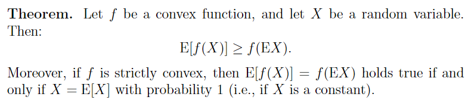
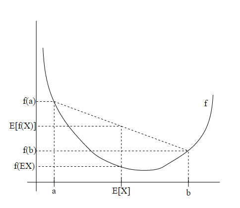
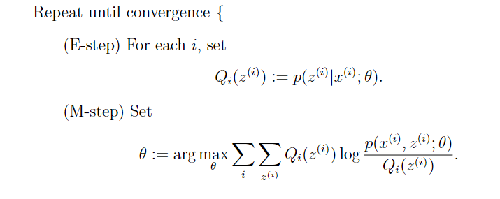
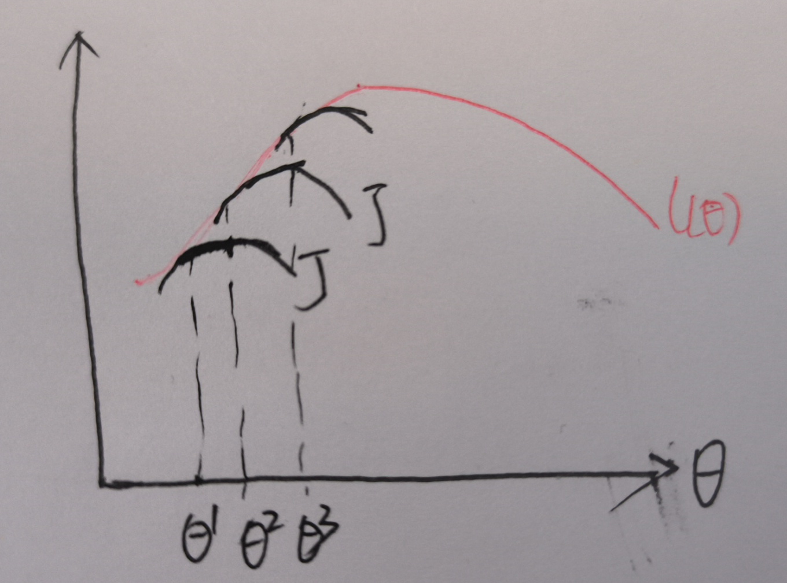

<!DOCTYPE html>


<html lang="zh-CN">


<head>
  <meta name="baidu-site-verification" content="codeva-NSg7ynviLa" />
  <meta charset="utf-8" />
    
  <meta name="viewport" content="width=device-width, initial-scale=1, maximum-scale=1" />
  <title>
    EM算法 |  
  </title>
  <meta name="generator" content="hexo-theme-ayer">
  
  <link rel="shortcut icon" href="/images/mojie.jpg" />
  
  
<link rel="stylesheet" href="/dist/main.css">

  <link rel="stylesheet" href="https://cdn.jsdelivr.net/gh/Shen-Yu/cdn/css/remixicon.min.css">
  
<link rel="stylesheet" href="/css/custom.css">

  
  <script src="https://cdn.jsdelivr.net/npm/pace-js@1.0.2/pace.min.js"></script>
  
  

  

<link rel="alternate" href="/atom.xml" title="null" type="application/atom+xml">
</head>

</html>

<body>
  <div id="app">
    
      
    <main class="content on">
      <section class="outer">
  <article
  id="post-EM算法"
  class="article article-type-post"
  itemscope
  itemprop="blogPost"
  data-scroll-reveal
>
  <div class="article-inner">
    
    <header class="article-header">
       
<h1 class="article-title sea-center" style="border-left:0" itemprop="name">
  EM算法
</h1>
 

    </header>
     
    <div class="article-meta">
      <a href="/posts/27a0e22b/" class="article-date">
  <time datetime="2023-04-20T03:31:23.000Z" itemprop="datePublished">2023-04-20</time>
</a> 
  <div class="article-category">
    <a class="article-category-link" href="/categories/%E7%90%86%E8%AE%BA%E5%AD%A6%E4%B9%A0/">理论学习</a> / <a class="article-category-link" href="/categories/%E7%90%86%E8%AE%BA%E5%AD%A6%E4%B9%A0/%E7%BA%BF%E6%80%A7%E6%A8%A1%E5%9E%8B/">线性模型</a>
  </div>
  
<div class="word_count">
    <span class="post-time">
        <span class="post-meta-item-icon">
            <i class="ri-quill-pen-line"></i>
            <span class="post-meta-item-text"> 字数统计:</span>
            <span class="post-count">2.1k</span>
        </span>
    </span>

    <span class="post-time">
        &nbsp; | &nbsp;
        <span class="post-meta-item-icon">
            <i class="ri-book-open-line"></i>
            <span class="post-meta-item-text"> 阅读时长≈</span>
            <span class="post-count">9 分钟</span>
        </span>
    </span>
</div>
 
    </div>
      
    <div class="tocbot"></div>


  
    <div class="article-entry" itemprop="articleBody">
       
  <link rel="stylesheet" type="text/css" href="https://cdn.jsdelivr.net/hint.css/2.4.1/hint.min.css"><p>EM 算法 (expectation-maximization)  是获得最大似然估计值的一种迭代算法，当原始的似然函数很复杂时，无法直接得到显式解时，我们可以选择使用 EM 算法。</p>
<span id="more"></span>
<h1>Jensen’s inequality</h1>
<p>假设 $f$ 是一个定义域为实数的函数，只有当 $f^{\prime \prime}(x) \geq 0$  恒成立是，$f$ 才是一个<strong>凸函数</strong>。如果 $f$ 输入是一个向量，那么其为凸函数的条件一般化为，只有当其 hessian 矩阵是一个半正定矩阵成立 ($\boldsymbol{H} \geq 0$)。 如果 $f^{\prime \prime}(x) &gt; 0$  ($\boldsymbol{H} &gt; 0$) ，那么我们称 $f$ 是一个<strong>严格凸函数 (strictly convex)</strong> 。</p>
<p><strong>Jensen’s inequality</strong> 表述如下：</p>
<p></p>
<p>我们可以下面的图，这里 $f$ 是一个凸函数，X 是一个随机变量，其有一半概率为 a, 一半概率为 b 。从这个例子中，我们可以看到 $\mathrm{E}[f(X)] \geq f(\mathrm{E} X)$ 。</p>
<p></p>
<p>注意：如果 $f$ 是一个凹函数，那么 $-f$ 就是凸函数。因此对于凹函数存在 $\mathrm{E}[f(X)] \leq f(\mathrm{E} X)$ 。</p>
<h1>The EM algorithm</h1>
<p>假设我们有一个包含 $m$ 个独立样本的训练集数据 $\left{x^{(1)}, \ldots, x^{(m)}\right}$ ，我们需要对一个模型 $p(x, z)$ 进行拟合参数，其中似然函数为：<br>
$$<br>
\begin{aligned}<br>
\ell(\theta) &amp;=\sum_{i=1}^{m} \log p(x ; \theta) \<br>
&amp;=\sum_{i=1}^{m} \log \sum_{z} p(x, z ; \theta)<br>
\end{aligned}<br>
$$<br>
但是，我们想要找到 $\theta$ 的最大似然估计值很难。这里，$z^{(i)}$ 是隐藏的随机变量。如果我们已知 $z^{(i)}$ ，那么获取最大似然估计值就很容易。</p>
<p>在这种情况下，EM 算法提供了一种估计参数的最大似然估计值的有效方法（哈哈哈，估计最大似然估计值，“估计估计值”，双重估计）。</p>
<blockquote>
<p>Maximizing $\ell(\theta)$ explicitly might be difficult，our strategy will be to instead repeatedly construct a lower-bound on $\ell$ (E-step), and then optimize that lower-bound (M-step).</p>
</blockquote>
<p>对于每个个体 $i$ ，设 $Q_{i}$ 为 $z$ 的分布 $\left(\sum_{z} Q_{i}(z)=1, Q_{i}(z) \geq 0 \right)$ ，因此 (如果 $z$ 是连续变量，那么 $Q_{i}$ 就改为概率密度， <strong>$z$ 的求和式子改为积分</strong> ，也就是 $\sum_{z^{(i)}}$ 改为 $\int_{z^{(i)}} * dz^{(i)}$ )<br>
$$<br>
\begin{aligned}<br>
\ell(\theta) = \sum_{i} \log p\left(x^{(i)} ; \theta\right) &amp;=\sum_{i} \log \sum_{z^{(i)}} p\left(x^{(i)}, z^{(i)} ; \theta\right) \<br>
&amp;=\sum_{i} \log \sum_{z^{(i)}} Q_{i}\left(z^{(i)}\right) \frac{p\left(x^{(i)}, z^{(i)} ; \theta\right)}{Q_{i}\left(z^{(i)}\right)} \<br>
&amp; \geq \sum_{i} \sum_{z^{(i)}} Q_{i}\left(z^{(i)}\right) \log \frac{p\left(x^{(i)}, z^{(i)} ; \theta\right)}{Q_{i}\left(z^{(i)}\right)}<br>
\end{aligned}<br>
$$<br>
最后一步应用了 Jensen 不等式。因为，我们知道 $\log(x)$ 是一个凹函数，因为 $f^{\prime \prime}(x)=-1 / x^{2}&lt;0$ 恒成立。并且，下式可视为 $\left[\frac{p\left(x^{(i)}, z^{(i)} ; \theta\right)}{Q_{i}\left(z^{(i)}\right)}\right]$ 对 $z^{(i)}$ 的期望<br>
$$<br>
\sum_{z^{(i)}} Q_{i}\left(z^{(i)}\right)\left[\frac{p\left(x^{(i)}, z^{(i)} ; \theta\right)}{Q_{i}\left(z^{(i)}\right)}\right]<br>
$$<br>
通过 Jensen 不等式，我们有下式成立，得证上面公式的最后一步。这里的 ${z}^{(i)} \sim Q_{i}$  下标表示这是对  $z^{(i)}$ 的期望，其中  $z^{(i)}$ 服从分布 $Q_i$ 。</p>
<p>$$<br>
f\left(\mathrm{E}<em>{z^{(i)} \sim Q</em>{i}}\left[\frac{p\left(x^{(i)}, z^{(i)} ; \theta\right)}{Q_{i}\left(z^{(i)}\right)}\right]\right) \geq \mathrm{E}<em>{z^{(i)} \sim Q</em>{i}}\left[f\left(\frac{p\left(x^{(i)}, z^{(i)} ; \theta\right)}{Q_{i}\left(z^{(i)}\right)}\right)\right]<br>
$$<br>
现在，对于任何一个分布  $Q_i$ , 我们都能得到一个 $\ell(\theta)$ 的下限。我们对于 $Q_i$ 存在很多种选择，那么我们选择哪一个呢？如果我们对参数 $\theta$ 目前已有估计值，那么一个自然的选择是使得  $\ell(\theta)$ 的下限与  $\ell(\theta)$  的值很接近。换句话说，我们想让上面的不等式针对特定的  $\theta$ 变成等式，这样做可以使得每次迭代 $\ell(\theta)$  单调递增。</p>
<p>为了使得  $\ell(\theta)$ 的下限等于 $\ell(\theta)$ ，我们需要上面的 Jensen 不等式在特定的 $\theta$ 时变成等式，也是就说要对常量求期望，即要求，对所有所有的  $z^{(i)}$  ，下式均为一个固定的常数。<br>
$$<br>
\frac{p\left(x^{(i)}, z^{(i)} ; \theta\right)}{Q_{i}\left(z^{(i)}\right)}=c<br>
$$<br>
做个变换得到：<br>
$$<br>
\sum_{z}p\left(x^{(i)}, z^{(i)} ; \theta\right) = \sum_{z}Q_{i}\left(z^{(i)}\right)c<br>
$$<br>
我们知道 $\sum_{z} Q_{i}\left(z^{(i)}\right)=1$ ，因此我们得到<br>
$$<br>
\sum_{z}p\left(x^{(i)}, z^{(i)} ; \theta\right) = c<br>
$$<br>
因此<br>
$$<br>
\begin{aligned}<br>
Q_{i}\left(z^{(i)}\right)<br>
&amp;=\frac{p\left(x^{(i)}, z^{(i)} ; \theta\right)}{c} \<br>
&amp;=\frac{p\left(x^{(i)}, z^{(i)} ; \theta\right)}{\sum_{z} p\left(x^{(i)}, z ; \theta\right)} \<br>
&amp;=\frac{p\left(x^{(i)}, z^{(i)} ; \theta\right)}{p\left(x^{(i)} ; \theta\right)} \<br>
&amp;=p\left(z^{(i)} \mid x^{(i)} ; \theta\right)<br>
\end{aligned}<br>
$$<br>
因此，这里我们简单地将   $Q_i$  设定为  $z^{(i)}$ 基于给定的 $x^{(i)}$ 和  $\theta$  的<strong>后验分布</strong> 。</p>
<p>现在，通过我们选择的 $Q_i$ ，我们得到了想要最大化的 $\ell(\theta)$ 的下限，这是 E 步。在 M 步中，我们则基于 $\theta$  最大化 $\ell(\theta)$ 的下限公式，得到一组新的参数 $\theta$  。重复上面的步骤就是 EM 算法，描述如下：</p>
<p></p>
<p>这里第二个式子还可以进一步简化：<br>
$$<br>
\begin{aligned}<br>
\theta &amp; := \operatorname{arg} \max_{\theta} \sum_{i} \sum_{z^{(i)}} Q_{i}\left(z^{(i)}\right) \log \frac{p\left(x^{(i)}, z^{(i)} ; \theta\right)}{Q_{i}\left(z^{(i)}\right)} \<br>
&amp; := \operatorname{arg} \max_{\theta} \sum_{i} \sum_{z^{(i)}} Q_{i}\left(z^{(i)}\right) \left( \log p\left(x^{(i)}, z^{(i)} ; \theta\right) - \log Q_{i}\left(z^{(i)}\right) \right) \<br>
&amp; := \operatorname{arg} \max_{\theta} \sum_{i} \sum_{z^{(i)}} Q_{i}\left(z^{(i)}\right)  \log p\left(x^{(i)}, z^{(i)} ; \theta\right) \quad \because \text{后一项与} \theta \text{无关，为常量}\<br>
&amp; := \operatorname{arg} \max_{\theta} \sum_{i} \mathrm{E}<em>{z^{(i)}|x^{(i)}, \theta^{[t]}}   \log p\left(x^{(i)}, z^{(i)} ; \theta\right) \<br>
&amp; := \operatorname{arg} \max</em>{\theta}  \mathrm{E}<em>{z^{(i)}|x^{(i)}, \theta^{[t]}} \left( \sum</em>{i}    \log p\left(x^{(i)}, z^{(i)} ; \theta\right) \right) \</p>
<p>\end{aligned}<br>
$$<br>
其中， $\theta^{[t]}$ 是上一轮的参数值。</p>
<p>还有一点小问题，因为 E 步是计算条件期望的，因此严格来说计算 $\sum_{i} \sum_{z^{(i)}} Q_{i}\left(z^{(i)}\right)  \log p\left(x^{(i)}, z^{(i)} ; \theta\right)$ 的过程应该放在 E 步。</p>
<p>那么，我们如何知道EM算法是否收敛呢？</p>
<h1>EM 算法的收敛性</h1>
<p>我们这里证明 EM 算法只会单调地增加对数似然值，即证明 $\ell\left(\theta^{(t)}\right) \leq \ell\left(\theta^{(t+1)}\right)$ 。</p>
<p>首先，我们通过选择 $Q_{i}$ ，我们使得 Jensen 不等式在当前参数下满足等式关系，因此，在求 $\theta^{(t+1)}$ 过程中， 存在：<br>
$$<br>
\ell\left(\theta^{(t)}\right)=\sum_{i} \sum_{z^{(i)}} Q_{i}^{(t+1)}\left(z^{(i)}\right) \log \frac{p\left(x^{(i)}, z^{(i)} ; \theta^{(t)}\right)}{Q_{i}^{(t+1)}\left(z^{(i)}\right)}<br>
$$<br>
当我们通过 M 步对上式右手项最大化，获得  $\theta^{(t+1)}$ 后，此时：<br>
$$<br>
\begin{aligned}<br>
\ell\left(\theta^{(t+1)}\right) &amp; \geq \sum_{i} \sum_{z^{(i)}} Q_{i}^{(t+1)}\left(z^{(i)}\right) \log \frac{p\left(x^{(i)}, z^{(i)} ; \theta^{(t+1)}\right)}{Q_{i}^{(t+1)}\left(z^{(i)}\right)} \quad \because \text{Jensen’s inequality}\<br>
&amp; \geq \sum_{i} \sum_{z^{(i)}} Q_{i}^{(t+1)}\left(z^{(i)}\right) \log \frac{p\left(x^{(i)}, z^{(i)} ; \theta^{(t)}\right)}{Q_{i}^{(t+1)}\left(z^{(i)}\right)} \quad \because  \theta^{(t+1)} = \arg \max <em>{\theta} \sum</em>{i} \sum_{z^{(i)}} Q_{i}^{(t+1)}\left(z^{(i)}\right) \log \frac{p\left(x^{(i)}, z^{(i)} ; \theta\right)}{Q_{i}^{(t+1)}\left(z^{(i)}\right)}\<br>
&amp;=\ell\left(\theta^{(t)}\right)<br>
\end{aligned}<br>
$$<br>
因此，我们证明<br>
$$<br>
\ell\left(\theta^{(t)}\right) \leq \ell\left(\theta^{(t+1)}\right)<br>
$$<br>
因此，EM 算法只会使对数似然值不断增加，直至收敛。收敛的标准可以看两次迭代的  $\ell(\theta)$ 的增加量是否低于给定阈值。</p>
<p><strong>注意</strong>，如果我们定义：<br>
$$<br>
J(Q, \theta)=\sum_{i} \sum_{z^{(i)}} Q_{i}\left(z^{(i)}\right) \log \frac{p\left(x^{(i)}, z^{(i)} ; \theta\right)}{Q_{i}\left(z^{(i)}\right)}<br>
$$<br>
我们知道 $\ell(\theta) \geq J(Q, \theta)$  。 EM 算法可以视为对 $J(Q, \theta)$ 的坐标上升法，其中 E 步可以视为固定 $\theta$ 对 $Q$ 的最大化（因为  $\theta$ 固定，因为  $J(Q, \theta)$  的最大值就是 $\ell(\theta)$ ，因此就是选择一个  $Q$ 使得不等式成立），而 M 步可以视为固定 $Q$  对 $\theta$ 的最大化（这一点很好理解  $\ell(\theta)$ ）。</p>
<p>下图为形象化的解释，其中红线为</p>
<p></p>
<p>因此 <strong>EM 算法一定会收敛</strong>，只不过收敛的位置可能是<strong>局部最优解</strong>。</p>
<h1>参考文献</h1>
<ol>
<li>
<p>Ng A. CS229 Lecture notes[J]. CS229 Lecture notes, 2000, 1(1): 1-3.</p>
</li>
<li>
<p><a target="_blank" rel="noopener" href="https://www.cnblogs.com/pinard/p/6912636.html">https://www.cnblogs.com/pinard/p/6912636.html</a></p>
</li>
</ol>
 
      <!-- reward -->
      
    </div>
    

    <!-- copyright -->
    
    <div class="declare">
      <ul class="post-copyright">
        <li>
          <i class="ri-copyright-line"></i>
          <strong>版权声明： </strong>
          
          本博客所有文章除特别声明外，著作权归作者所有。转载请注明出处！
          
        </li>
      </ul>
    </div>
    
    <footer class="article-footer">
       
  <ul class="article-tag-list" itemprop="keywords"><li class="article-tag-list-item"><a class="article-tag-list-link" href="/tags/%E7%90%86%E8%AE%BA%E5%AD%A6%E4%B9%A0/" rel="tag">理论学习</a></li><li class="article-tag-list-item"><a class="article-tag-list-link" href="/tags/%E7%BA%BF%E6%80%A7%E6%A8%A1%E5%9E%8B/" rel="tag">线性模型</a></li></ul>

    </footer>
  </div>

   
  <nav class="article-nav">
    
      <a href="/posts/2aec3b6c/" class="article-nav-link">
        <strong class="article-nav-caption">上一篇</strong>
        <div class="article-nav-title">
          
            python包-glob
          
        </div>
      </a>
    
    
      <a href="/posts/2ca177e4/" class="article-nav-link">
        <strong class="article-nav-caption">下一篇</strong>
        <div class="article-nav-title">文献阅读-基因型填充</div>
      </a>
    
  </nav>

  
   
     
</article>

</section>
      <footer class="footer">
  <div class="outer">
    <ul>
      <li>
        Copyrights &copy;
        2019-2026
        <i class="ri-heart-fill heart_icon"></i> Vincere Zhou
      </li>
    </ul>
    <ul>
      <li>
        
        
        <span>
  <span><i class="ri-user-3-fill"></i>访问人数:<span id="busuanzi_value_site_uv"></span></s>
  <span class="division">|</span>
  <span><i class="ri-eye-fill"></i>浏览次数:<span id="busuanzi_value_page_pv"></span></span>
</span>
        
      </li>
    </ul>
    <ul>
      
    </ul>
    <ul>
      
    </ul>
    <ul>
      <li>
        <!-- cnzz统计 -->
        
      </li>
    </ul>

    <!-- 与只只在一起天数 -->
	<ul>
		<li><span id="lovetime_span"></span></li>
	</ul>
    <script type="text/javascript">			
        function show_runtime() {
            window.setTimeout("show_runtime()", 1000);
            X = new Date("03/04/2021 22:11:00");
            Y = new Date();
            T = (Y.getTime() - X.getTime());
            M = 24 * 60 * 60 * 1000;
            a = T / M;
            A = Math.floor(a);
            b = (a - A) * 24;
            B = Math.floor(b);
            c = (b - B) * 60;
            C = Math.floor((b - B) * 60);
            D = Math.floor((c - C) * 60);
            lovetime_span.innerHTML = "只只和男朋友在一起了 " + A + "天" + B + "小时" + C + "分" + D + "秒"
        }
        show_runtime();
    </script>

  </div>
</footer>
      <div class="float_btns">
        <div class="totop" id="totop">
  <i class="ri-arrow-up-line"></i>
</div>

      </div>
    </main>
    <aside class="sidebar on">
      <button class="navbar-toggle"></button>
<nav class="navbar">
  
  <div class="logo">
    <a href="/"></a>
  </div>
  
  <ul class="nav nav-main">
    
    <li class="nav-item">
      <a class="nav-item-link" href="/">主页</a>
    </li>
    
    <li class="nav-item">
      <a class="nav-item-link" href="/archives">归档</a>
    </li>
    
    <li class="nav-item">
      <a class="nav-item-link" href="/categories">分类</a>
    </li>
    
    <li class="nav-item">
      <a class="nav-item-link" href="/tags">标签</a>
    </li>
    
    <li class="nav-item">
      <a class="nav-item-link" href="/friends">友链</a>
    </li>
    
    <li class="nav-item">
      <a class="nav-item-link" href="/about">关于</a>
    </li>
    
  </ul>
</nav>
<nav class="navbar navbar-bottom">
  <ul class="nav">
    <li class="nav-item">
      
      <a class="nav-item-link nav-item-search"  title="搜索">
        <i class="ri-search-line"></i>
      </a>
      
      
      <a class="nav-item-link" target="_blank" href="/atom.xml" title="RSS Feed">
        <i class="ri-rss-line"></i>
      </a>
      
    </li>
  </ul>
</nav>
<div class="search-form-wrap">
  <div class="local-search local-search-plugin">
  <input type="search" id="local-search-input" class="local-search-input" placeholder="Search...">
  <div id="local-search-result" class="local-search-result"></div>
</div>
</div>
    </aside>
    <script>
      if (window.matchMedia("(max-width: 768px)").matches) {
        document.querySelector('.content').classList.remove('on');
        document.querySelector('.sidebar').classList.remove('on');
      }
    </script>
    <div id="mask"></div>

<!-- #reward -->
<div id="reward">
  <span class="close"><i class="ri-close-line"></i></span>
  <p class="reward-p"><i class="ri-cup-line"></i>请我喝杯茶吧~</p>
  <div class="reward-box">
    
    <div class="reward-item">
      
      <span class="reward-type">支付宝</span>
    </div>
    
    
    <div class="reward-item">
      
      <span class="reward-type">微信</span>
    </div>
    
  </div>
</div>
    
<script src="/js/jquery-2.0.3.min.js"></script>


<script src="/js/lazyload.min.js"></script>

<!-- Tocbot -->


<script src="/js/tocbot.min.js"></script>

<script>
  tocbot.init({
    tocSelector: '.tocbot',
    contentSelector: '.article-entry',
    headingSelector: 'h1, h2, h3, h4, h5, h6',
    hasInnerContainers: true,
    scrollSmooth: true,
    scrollContainer: 'main',
    positionFixedSelector: '.tocbot',
    positionFixedClass: 'is-position-fixed',
    fixedSidebarOffset: 'auto'
  });
</script>

<script src="https://cdn.jsdelivr.net/npm/jquery-modal@0.9.2/jquery.modal.min.js"></script>
<link rel="stylesheet" href="https://cdn.jsdelivr.net/npm/jquery-modal@0.9.2/jquery.modal.min.css">
<script src="https://cdn.jsdelivr.net/npm/justifiedGallery@3.7.0/dist/js/jquery.justifiedGallery.min.js"></script>

<script src="/dist/main.js"></script>

<!-- ImageViewer -->

<!-- Root element of PhotoSwipe. Must have class pswp. -->
<div class="pswp" tabindex="-1" role="dialog" aria-hidden="true">

    <!-- Background of PhotoSwipe. 
         It's a separate element as animating opacity is faster than rgba(). -->
    <div class="pswp__bg"></div>

    <!-- Slides wrapper with overflow:hidden. -->
    <div class="pswp__scroll-wrap">

        <!-- Container that holds slides. 
            PhotoSwipe keeps only 3 of them in the DOM to save memory.
            Don't modify these 3 pswp__item elements, data is added later on. -->
        <div class="pswp__container">
            <div class="pswp__item"></div>
            <div class="pswp__item"></div>
            <div class="pswp__item"></div>
        </div>

        <!-- Default (PhotoSwipeUI_Default) interface on top of sliding area. Can be changed. -->
        <div class="pswp__ui pswp__ui--hidden">

            <div class="pswp__top-bar">

                <!--  Controls are self-explanatory. Order can be changed. -->

                <div class="pswp__counter"></div>

                <button class="pswp__button pswp__button--close" title="Close (Esc)"></button>

                <button class="pswp__button pswp__button--share" style="display:none" title="Share"></button>

                <button class="pswp__button pswp__button--fs" title="Toggle fullscreen"></button>

                <button class="pswp__button pswp__button--zoom" title="Zoom in/out"></button>

                <!-- Preloader demo http://codepen.io/dimsemenov/pen/yyBWoR -->
                <!-- element will get class pswp__preloader--active when preloader is running -->
                <div class="pswp__preloader">
                    <div class="pswp__preloader__icn">
                        <div class="pswp__preloader__cut">
                            <div class="pswp__preloader__donut"></div>
                        </div>
                    </div>
                </div>
            </div>

            <div class="pswp__share-modal pswp__share-modal--hidden pswp__single-tap">
                <div class="pswp__share-tooltip"></div>
            </div>

            <button class="pswp__button pswp__button--arrow--left" title="Previous (arrow left)">
            </button>

            <button class="pswp__button pswp__button--arrow--right" title="Next (arrow right)">
            </button>

            <div class="pswp__caption">
                <div class="pswp__caption__center"></div>
            </div>

        </div>

    </div>

</div>

<link rel="stylesheet" href="https://cdn.jsdelivr.net/npm/photoswipe@4.1.3/dist/photoswipe.min.css">
<link rel="stylesheet" href="https://cdn.jsdelivr.net/npm/photoswipe@4.1.3/dist/default-skin/default-skin.min.css">
<script src="https://cdn.jsdelivr.net/npm/photoswipe@4.1.3/dist/photoswipe.min.js"></script>
<script src="https://cdn.jsdelivr.net/npm/photoswipe@4.1.3/dist/photoswipe-ui-default.min.js"></script>

<script>
    function viewer_init() {
        let pswpElement = document.querySelectorAll('.pswp')[0];
        let $imgArr = document.querySelectorAll(('.article-entry img:not(.reward-img)'))

        $imgArr.forEach(($em, i) => {
            $em.onclick = () => {
                // slider展开状态
                // todo: 这样不好，后面改成状态
                if (document.querySelector('.left-col.show')) return
                let items = []
                $imgArr.forEach(($em2, i2) => {
                    let img = $em2.getAttribute('data-idx', i2)
                    let src = $em2.getAttribute('data-target') || $em2.getAttribute('src')
                    let title = $em2.getAttribute('alt')
                    // 获得原图尺寸
                    const image = new Image()
                    image.src = src
                    items.push({
                        src: src,
                        w: image.width || $em2.width,
                        h: image.height || $em2.height,
                        title: title
                    })
                })
                var gallery = new PhotoSwipe(pswpElement, PhotoSwipeUI_Default, items, {
                    index: parseInt(i)
                });
                gallery.init()
            }
        })
    }
    viewer_init()
</script>

<!-- MathJax -->

<!-- Katex -->

<!-- busuanzi  -->


<script src="/js/busuanzi-2.3.pure.min.js"></script>


<!-- ClickLove -->

<!-- ClickBoom1 -->

<!-- ClickBoom2 -->

<!-- CodeCopy -->


<link rel="stylesheet" href="/css/clipboard.css">

<script src="https://cdn.jsdelivr.net/npm/clipboard@2/dist/clipboard.min.js"></script>
<script>
  function wait(callback, seconds) {
    var timelag = null;
    timelag = window.setTimeout(callback, seconds);
  }
  !function (e, t, a) {
    var initCopyCode = function(){
      var copyHtml = '';
      copyHtml += '<button class="btn-copy" data-clipboard-snippet="">';
      copyHtml += '<i class="ri-file-copy-2-line"></i><span>COPY</span>';
      copyHtml += '</button>';
      $(".highlight .code pre").before(copyHtml);
      $(".article pre code").before(copyHtml);
      var clipboard = new ClipboardJS('.btn-copy', {
        target: function(trigger) {
          return trigger.nextElementSibling;
        }
      });
      clipboard.on('success', function(e) {
        let $btn = $(e.trigger);
        $btn.addClass('copied');
        let $icon = $($btn.find('i'));
        $icon.removeClass('ri-file-copy-2-line');
        $icon.addClass('ri-checkbox-circle-line');
        let $span = $($btn.find('span'));
        $span[0].innerText = 'COPIED';
        
        wait(function () { // 等待两秒钟后恢复
          $icon.removeClass('ri-checkbox-circle-line');
          $icon.addClass('ri-file-copy-2-line');
          $span[0].innerText = 'COPY';
        }, 2000);
      });
      clipboard.on('error', function(e) {
        e.clearSelection();
        let $btn = $(e.trigger);
        $btn.addClass('copy-failed');
        let $icon = $($btn.find('i'));
        $icon.removeClass('ri-file-copy-2-line');
        $icon.addClass('ri-time-line');
        let $span = $($btn.find('span'));
        $span[0].innerText = 'COPY FAILED';
        
        wait(function () { // 等待两秒钟后恢复
          $icon.removeClass('ri-time-line');
          $icon.addClass('ri-file-copy-2-line');
          $span[0].innerText = 'COPY';
        }, 2000);
      });
    }
    initCopyCode();
  }(window, document);
</script>


<!-- CanvasBackground -->


    
  </div>
<script src="/live2dw/lib/L2Dwidget.min.js?094cbace49a39548bed64abff5988b05"></script><script>L2Dwidget.init({"pluginRootPath":"live2dw/","pluginJsPath":"lib/","pluginModelPath":"assets/","tagMode":false,"debug":false,"model":{"jsonPath":"/live2dw/assets/wanko.model.json"},"display":{"position":"left","width":150,"height":300,"hOffset":80,"vOffset":-70},"mobile":{"show":false,"scale":0.5},"log":false});</script></body>

</html>